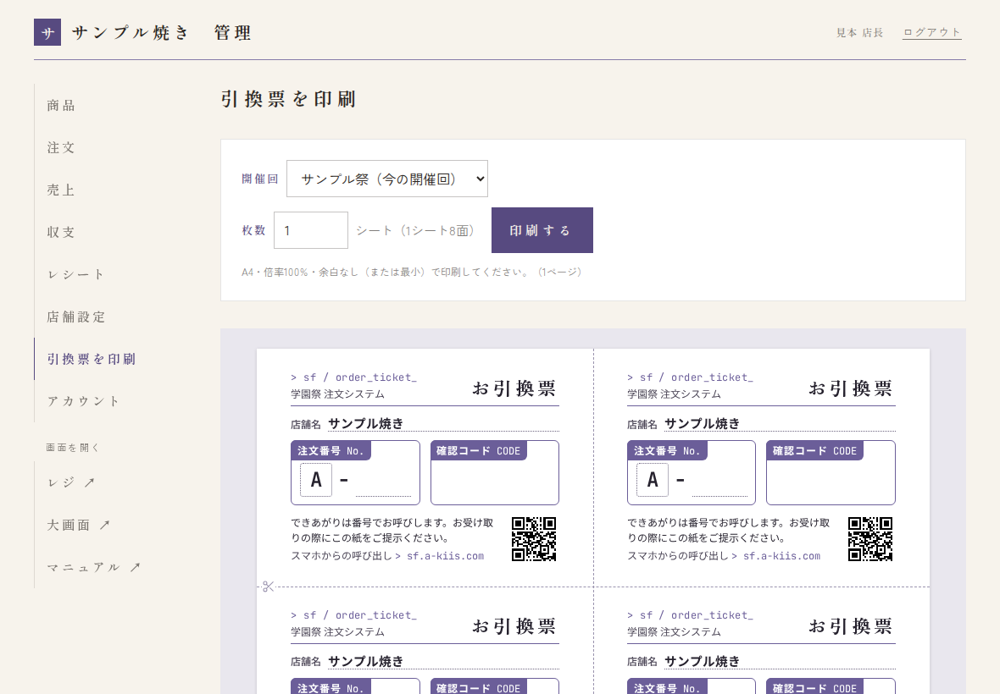
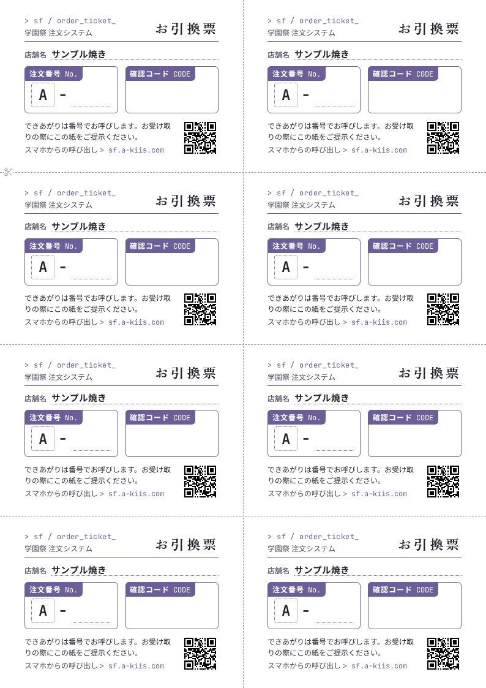

学園祭の前日までに、店長がしておくことです。困ったときの連絡先は運営（システム管理者）です。
管理画面にログインする
- ブラウザで
https://sf.a-kiis.com/manageを開きます。 - 運営から伝えられたメールアドレスとパスワードを入れて、ログイン を押します。

ログインすると、左（スマホでは上）にメニューが出ます。商品 注文 売上 収支 レシート 店舗設定 アカウント と、注文帳・レジと大画面を開くリンク レジ ↗ 大画面 ↗ です。

パスワードを変える
最初に渡されたパスワードは、自分だけが知るものに変えてください。
- メニューの アカウント を開きます。
- 今のパスワードと、新しいパスワード（10文字以上）を2回入れて、変更のボタンを押します。

パスワードを忘れたら
運営に連絡してください。
店舗設定を確かめる
メニューの 店舗設定 を開きます。変えたら、保存する を押してください。

| 項目 | 内容 |
|---|---|
| 今の開催回 | 今の学園祭と、整理番号の頭文字（例: A）。お客さんの注文画面・レジ・大画面の URL もここに出ます（スタッフに伝える URL です）。 |
| 店舗の種類 | 飲食／飲食以外。変えたいときは運営に連絡します。 |
| 店名・添え書き | お客さんの画面に出ます。添え書きはお品書きの横に縦書きで出るので短めに。 |
| 店舗色 | 選んでいる品の印や、呼び出し番号の下の線などに使う色です。 |
| 呼び出し後の取り置き時間（分） | 呼び出してからこの時間を過ぎた注文は、注文帳で「期限切れ」と出ます（1〜120分）。自動で取り消されることはありません。 |
| 1回の注文で頼める合計数量の上限 | Web 注文1回で頼める個数の上限です。空欄のときはデフォルトの値を使います（デフォルトに戻す で戻せます）。レジの注文には関係しません。 |
| お客さんにメールを送る | メールアドレスを入れたお客さんに、注文の控えとできあがりの知らせを送ります。 |
スタッフ用 PIN を設定する
スタッフが注文帳・レジに入るための数字です。店舗設定のいちばん下にあります。
- 新しい PIN（6〜12桁の数字）を入れます。誕生日や「123456」のような、すぐ分かる数字は避けてください。
- PIN を変更する を押します。
- 当日、スタッフにだけ口頭などで伝えます（掲示したり、SNS に書いたりしない）。

営業中に PIN を変えると
ログイン中のスタッフは全員ログアウトになり、新しい PIN で入り直す必要があります。営業中に変えるのは、PIN が外にもれたときだけにしてください。
メニューを登録する
メニューの 商品 を開きます。
- カテゴリを作る: 画面の下の「カテゴリ」に名前（例: 焼きもの、お飲みもの）を入れて 追加。並び順の数字が小さいほど上に出ます。
- 商品を足す: 右上の 商品を追加 を押し、品名・価格（円）・カテゴリ・並び順・説明を入れて 保存する。
- 写真をのせる（任意）: 一度保存した商品を開くと、写真を登録できます（JPEG・PNG・WebP、5MBまで）。
- 選択肢をつける（任意）: 麺の種類やトッピングなど。下の囲みを見てください。

選択肢（麺・トッピングなど）のつけ方
選択肢の組を足す で組（例: 麺、トッピング）を作り、＋ 選択肢を足す で中身（例: そば、うどん）を足します。
- 必須: お客さんが必ず1つ選ぶ組（例: 麺）にチェック。
- 選べる数: その組からいくつまで選べるか（例: トッピングは2つまで）。
- 追加料金: 選んだときに足す金額（例: うどん +50円。なければ 0）。
- まとめ値段: 「3つで100円」のように、まとめて安くするとき。使わないときは空欄。
- 売り切れにする: 「販売中（外すと売り切れ）」のチェックを外します。当日はレジからも切り替えられます（→ レジと売り切れ）。
- お品書きから消す: 商品を開いて この商品を削除。売上の記録は残り、削除した商品も表示 から お品書きに戻す で戻せます。
登録したら、スマホでお客さんの注文画面（店舗設定にある URL）を開いて、見え方を確かめてください。
機材の動作確認（当日の前に一度）
引換票を印刷する（レジの注文用）
引換票は、レジで注文したお客さんに渡す紙です。A4 1枚に8枚分が並んでいて、切り分けて使います。
- 店舗名と、注文番号の頭の英字（例: A）は印刷されます。
- 注文番号の数字と確認コードは空欄です。レジで会計のときに手で書き込みます（→ レジでの渡し方）。
- 管理画面のメニューの 引換票を印刷 を押します。
- 開催回を確かめます。ふだんは「（今の開催回）」のままで大丈夫です。頭の英字は開催回ごとに決まるので、次の開催回の分を前もって刷るときだけ切り替えます。
- 枚数を入れます（1〜20シート。1シートで8枚分）。レジで受ける注文の数 ÷ 8 より少し多めにしておくと安心です。
- 下の見本で、店舗名と頭の英字が合っているか確かめます。
- 印刷する を押すと、ブラウザの印刷の画面が開きます。


印刷の画面の設定（Chrome の場合）
| 項目 | 設定 |
|---|---|
| 用紙サイズ | A4 |
| 向き | 縦 |
| 倍率 | 100%（「デフォルト」のまま。「ページに合わせる」にしない） |
| 余白 | なし（選べないプリンターでは「最小」） |
| 両面印刷 | オフ |
プレビューで 1シートが1ページに収まっているか、ページ数が入れた枚数と同じかを確かめてから印刷します。


切り分ける
点線（縦1本・横3本）に沿って切ると、同じ大きさの8枚になります。左のはさみの印から切り始めると分かりやすいです。
うまく印刷できないとき
- 1シートが2ページに分かれる・小さく印刷される: 倍率が100%になっているか、余白が「なし」か「最小」かを確かめます。
- 紫の色が出ない: 印刷の画面の「詳細設定」で「背景のグラフィック」をオンにします。
- 印刷するが押せない: ボタンの下に理由が出ます。「頭文字が分かりません」などと出たときは、その開催回に出店していないので、システム管理者に連絡してください。